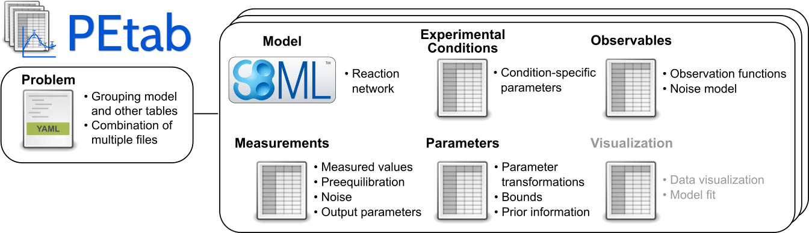
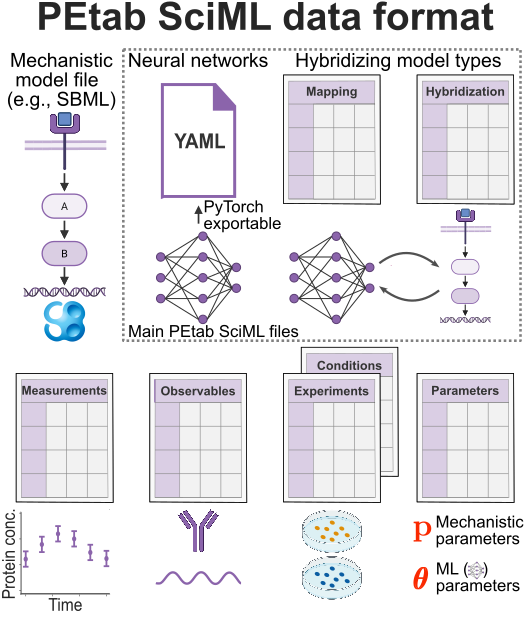
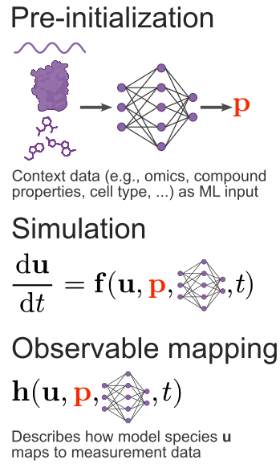
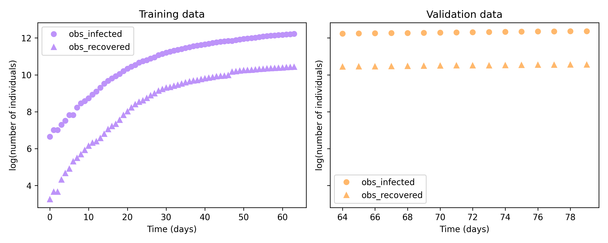
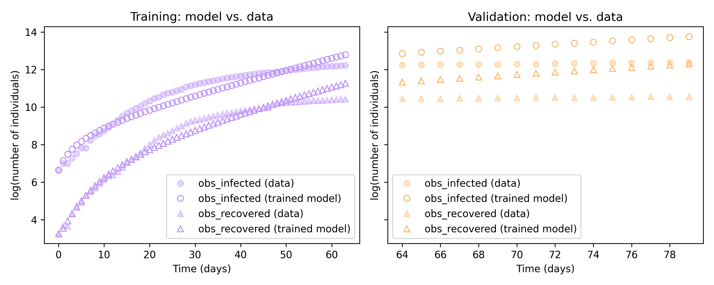

PEtab SciML
A format specification for solving parameter estimation problems using scientific machine learning
Branwen Snelling
Introduce myself: computational biologist. This is a format specification, so it's relevant
to RSEs across domains, not just biology. The core ideas transfer to any problem where you
fit a differential-equation model to data.
Parameter estimation in systems biology
Many biological processes are modelled by systems of mechanistic
ordinary differential equations (ODEs) .
These models contain parameters — reaction rates, binding affinities, degradation
constants — that are unknown and often unmeasurable .
The estimation problem
We infer parameters by fitting the model to experimental data.
This is an optimisation problem wrapped around an ODE solve. Gradient-based optimisation
needs derivatives through the solver — which is why automatic differentiation matters here.
The PEtab format
PEtab is a
tabular data format for specifying parameter estimation problems,
widely used in systems biology.
A problem is defined by a set of .tsv and .yaml files, making it shareable and reproducible.

The PEtab problem: a model plus tables for conditions, observables, measurements and parameters. Source: petab.readthedocs.io
The model (e.g. SBML) defines the reaction network. The tables layer on the experimental
design, what was observed, the data itself, and the parameters with their bounds and priors.
Human-readable, tool-agnostic, reproducible.
The missing link
Purely mechanistic models rely on us knowing the governing equations, however:
Some dynamics are hard to describe from first principles
Models can have missing terms or interactions
Models can contain incorrect assumptions, e.g. standard kinetics do not apply
We want to control for these uncertainties but retain mechanistic insights
Scientific machine learning
SciML augments mechanistic ODE models with machine learning components.
The ODE captures the known physics/biology and neural networks learn the unknown dynamics.
But we need a standard way to specify these hybrid problems, which lead us to PEtab SciML .
PEtab SciML
An extension to PEtab for building and training scientific machine
learning problems.

PEtab SciML extends the PEtab problem with neural network definitions and hybridization tables. Source: petab-sciml.readthedocs.io
Note the two new ingredients: a YAML description of the neural networks (PyTorch-exportable),
and mapping/hybridization tables that say where the ML elements plug into the problem.
Mechanistic parameters (p) and ML parameters (theta) are trained together.
Why a format specification?
Reproducibility , a problem is fully defined by a
standard set of files, not bespoke code.Multi-language support , a specified problem can be
imported into multiple ecosystems i.e.
AMICI (Python) or
PEtab.jl (Julia).Transferable ML models , the YAML format defines the
neural networks and is ecosystem agnostic.
Flexible hybridization

Pre-initialization — map high-dimensional
inputs (e.g. images) to model parametersSimulation — learn dynamic terms within the
ODE, or replace the whole right-hand side (a Neural ODE)Observable mapping — learn the formula that
links model outputs to real observations
Source: petab-sciml.readthedocs.io
Walk top to bottom: content data mapped to parameters upstream; a network inside the RHS
during simulation; a network in the observable map; and the result compared to data during
fitting. The same format expresses all of these.
Observable mapping — a few ways to say it:
(1) The model simulates "true" quantities (e.g. concentrations), but instruments rarely
measure those directly. The observable formula is the translation from model state to
measured readout — and a neural network can learn it when that relationship is
unknown or nonlinear (like a calibration curve).
(2) It's the final layer between the mechanistic model and the data — a learned
readout function h(u) saying how the hidden states show up in the measurements.
(3) Concretely: our SIR model tracks S, I, R, T, but the reported numbers might be some
scaled or combined version of those states; the observable map converts model states into
the reported measurements.
Example: an epidemiology case study
A classic SIR model splits a population into
S usceptible, I nfected and
R ecovered compartments. This formulation also includes a
quarantined compartment $T$ to capture interventions.
\[\begin{aligned}
\frac{dS}{dt} &= -\beta \frac{S I}{N} \\[0.3em]
\frac{dI}{dt} &= \beta \frac{S I}{N} - \gamma I - Q\, I \\[0.3em]
\frac{dR}{dt} &= \gamma I + \delta T \\[0.3em]
\frac{dT}{dt} &= Q\, I - \delta T
\end{aligned}\]
$S$ susceptible, $I$ infected, $R$ recovered, $T$ quarantined; $N$ total population.
$\beta$ is the infection rate, $\gamma$ the recovery rate, $Q$ the quarantine strength,
and $\delta$ the rate quarantined individuals recover.
The problem
The quarantine strength $Q$ changes the dynamics in a way that is hard to write down
mechanistically because it varies over time and by policy.
So we incorporate a neural network into the simulation to learn $Q$ from the data.
This is an example of a Universal Differential Equation (UDE) .
\[\begin{aligned}
\frac{\mathrm{d}S}{\mathrm{d}t} &= - \frac{\beta S I}{N} \\[0.3em]
\frac{\mathrm{d}I}{\mathrm{d}t} &= \frac{\beta S I}{N} - \gamma I - \mathbf{NN}_1 \cdot I \\[0.3em]
\frac{\mathrm{d}R}{\mathrm{d}t} &= \gamma I + \delta T \\[0.3em]
\frac{\mathrm{d}T}{\mathrm{d}t} &= \mathbf{NN}_1 \cdot I - \delta T
\end{aligned}\]
$\beta$ (infection rate) and $\gamma$ (recovery rate) are mechanistic parameters;
and the outputs from $\mathbf{NN}_1$ represent $Q$, the quarantine strength. All are trained together against the data.
The $\mathrm{NN}_1$ term is the learned quarantine strength. Mechanistically we only commit to "some
fraction of the infected are removed from circulation over time" and let the network discover
its shape.
Building the problem in PEtab SciML
The data

Observed infected and recovered counts, split into training and validation. Data: Dandekar et al., Patterns 2020
Raw infected/recovered case data over time, split into a training window and a held-out
validation window.
Trained model

Trained UDE (open markers) against the data (filled markers), on both training and validation windows. Trained with AMICI .
The trained UDE reproduces the training data and generalises to the held-out validation window.
Summary
PEtab SciML is a language-agnostic format for specifying and training hybrid modelsIt facilitates solving parameter estimation problems, which are central to systems biology and other fields
The format supports flexible hybridization, multiple languages, and a transferable ML model format improving reproducibility
References
PEtab SciML — the format specificationPEtab — the base tabular formatAMICI — Python simulation & trainingPEtab.jl — Julia simulation & training
Acknowledgements
The Fröhlich Lab
The Francis Crick Institute
Fabian Fröhlich
Yoana Arroyo Berdugo
Tamara Hodgetts
Sebastian Persson
Theo de Pomereu
Marta Sadlej
Asami Yasumoto-Rouhiainen
Jana Zah
The Hasenauer Lab
University of Bonn
Dilan Pathirana
Maren Philipps
Daniel Weindl
Add funding acknowledgements if needed.